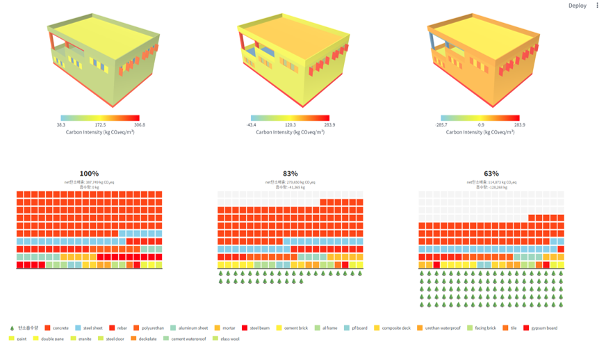

DB Insurance Dormitory
Environmental design support for competition-stage decision making.
Sustainability / Environmental Design Specialist
13+ years across construction, green building certification, environmental analysis, and parametric LCA workflows.

Embodied carbon analysis and material comparison for early-stage design decisions.
Daylight, solar, energy and environmental performance feedback for design teams.
Rhino + Grasshopper workflows translating geometry into measurable sustainability data.
Construction background supporting realistic, feasible, and coordinated design thinking.
Selected Work
Environmental design support for competition-stage decision making.

Daylight, solar and sustainability strategy support.

Environmental analysis supporting industrial architectural design.

Carbon-conscious and environmental performance considerations.

Environmental Strategy
Daylight, solar and energy analysis used to support design option comparison and environmental responsiveness.
Parametric LCA Tool
Developed a Rhino + Grasshopper based workflow to provide real-time carbon feedback, material comparison, and early-stage design support.

Experience
Sustainability design support, environmental analysis, ESG and carbon-conscious design workflows.
Green building certification, ZEB, G-SEED, BF, energy efficiency and sustainability consulting.
Building energy research, prediction models, automation systems and environmental performance studies.
On-site construction experience, coordination, cost, schedule, buildability and quality control.
Tools
LCA tools: One Click LCA — familiar
Certifications
English: IELTS 7.0
Contact